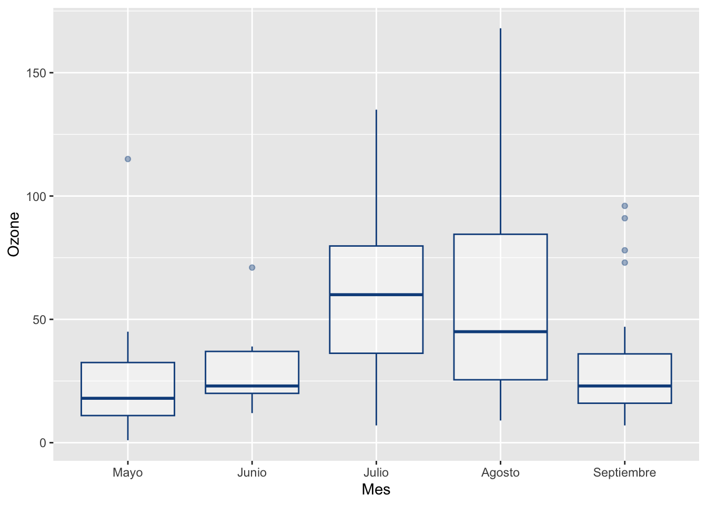
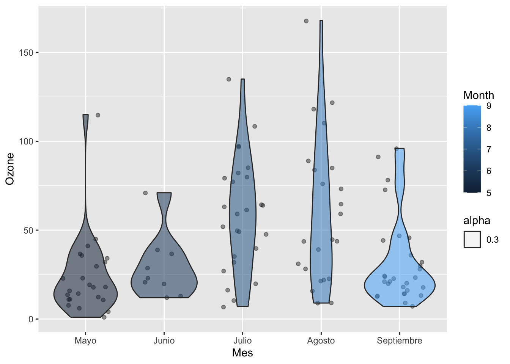

5 Atipicidades
Para el estudio de las tipicidades, se echará mano de dos tipos de gráficos del paquete ggplot2: Diagramas de caja (boxplot) y gráficos de violín (Violinplot).
El paquete ggplot2 es uno de los paquetes más completos que tiene R para generar gráficos diversos y de alta complejidad y calidad, el cuál trabaja bajo una filosofía de Grammar of Graphs (Gramática de gráficos) que permite contruir los gráficos a partir de capas.
Primeramente se crea el marco de trabajo base (Primera capa), el cuál al contener solo la base de datos cargada, no mostrará ningún elemento visual:

Ahora, se agrega una segunda capa de tipo geom_boxplot
ggplot(aire, aes(Month,Ozone )) +
geom_boxplot(alpha = 0.4, color = "blue", aes(group = cut_width(Month, 1)))
En el gráfico anterior se puede notar que en el horizontal aparecen los meses dados por número de mes, pero podría ser interesante verlo con nombre del mes. El siguiente código crea una nueva columna en la base de datos con el nombre del mes
aire$Mes <- ifelse(aire$Month == 5, "Mayo",
ifelse (aire$Month == 6, "Junio",
ifelse(aire$Month == 7,"Julio",
ifelse(aire$Month == 8, "Agosto","Septiembre")
)
)
)
aire$Mes <- factor(aire$Mes, levels = c("Mayo","Junio","Julio","Agosto","Septiembre"))Seguidamente crearemos el mismo diagrama de caja, pero usando la nueva columnna
ggplot(aire, aes(Mes, Ozone)) +
geom_boxplot(alpha = 0.4, color = "dodgerblue4", outlier.shape = 19) 
Los datos atípicos se muestran como puntos fuera de la caja, pero esa forma podría cambiar a gusto del usuario. En el siguiente enlace puede ver un compendio de variantes para la figura que podría usarse para representar los puntos en R
La siguiente variante del diagrama de caja puede ser más interesante:
ggplot(aire, aes(Mes, Ozone)) +
geom_boxplot(alpha = 0.4, color = "dodgerblue4", outlier.shape = 19, outlier.color = "red", aes(fill = Month)) +
geom_point(alpha = 0.2)
Agreguemos otros elementos importantes en un gráfico, como título:
ggplot(aire, aes(Mes, Ozone)) +
geom_boxplot(alpha = 0.4, color = "dodgerblue4", outlier.shape = 19, outlier.color = "red", aes(fill = Month))+
labs(title = "Media diaria de Ozono en ppm, por mes", subtitle = "Roosevel Island según mes, del 1 de mayo al 30 de septiembre 1973", y = "Ozono")
Otra variante interesante del diagrama de caja que se viene utilizando, es el gráfico de violín o violin plot, el cuál presenta la ventaja de que permite conocer la distribución de los datos durante el recorrido.
Antes de constuir nuestro primer violin plot, podemos simplificar el código almacenando instrucciones de uso frecuente, como seguidamente se muestra:
# g1 es una variables que almacena la primera capa del gráfico a crear
g1 <- ggplot(aire, aes(Mes, Ozone))Los violinplot son un tipo de función de densidad (density plot) para los datos vistos desde arriba.este gráfico se está prefiriendo sobre el box plot, porque permite ver en el recorrido la forma en que se agrupan o se concentran los datos. No es necesario, para efectos de publicación, presentarlo junto con la caja.
Seguidamente, se construye el violin plot:
 Se puede agregar los puntos para verlos superpuestos al violinplot:
Se puede agregar los puntos para verlos superpuestos al violinplot:

Se puede superponer además con los box plot:
g1 +
geom_jitter(width = 0.3, alpha = 0.4) +
geom_boxplot(alpha = 0.4, color = "blue") +
geom_violin(aes(alpha = 0.3, fill = Month))
En el siguiente código se propone crear algunas estadísticas para los datos agrupados: cantidad de datos, desviación estándar, error estándar y lo límites superior e inferior para el intervalo de confianza para dicha media, con el objetico de incluirlos dentro del gráfico que se viene trabajando.